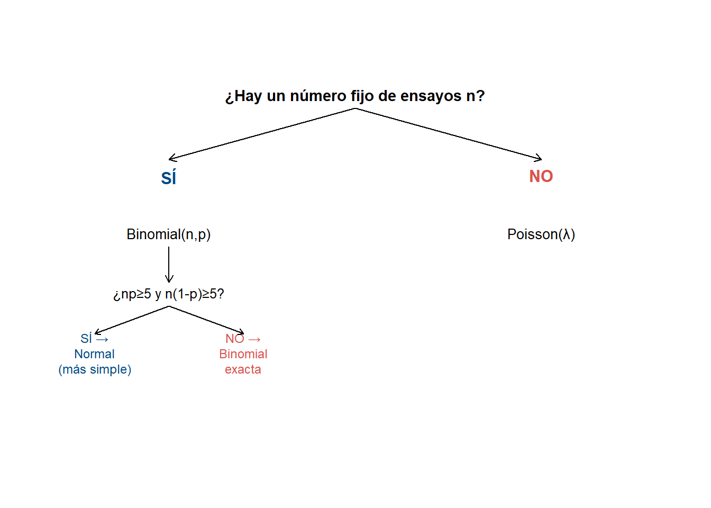

Code
n <- 20; p <- 0.15 # ejemplo rápido: 20 componentes, 15% de tasa de falla
dbinom(3, n, p) # P(X = 3)[1] 0.2428289Code
pbinom(3, n, p) # P(X <= 3)[1] 0.6477252Code
1 - pbinom(3, n, p) # P(X > 3)[1] 0.3522748Esta guía recorre en orden los cuatro temas del Taller 2 — binomial, Poisson, aproximación normal a la binomial, y función generadora de momentos — con la teoría mínima que necesitas tener fresca, un ejemplo resuelto por tema, y los errores donde más se pierden puntos. No reemplaza los Temas P6-P6d ni el Taller 2 · Práctica evaluativa: es el repaso integrado para el día antes del examen.
Ejecuta cada bloque en tu propia sesión de RStudio. La sección final son preguntas de estudio conceptuales con respuesta desarrollada — el tipo de pregunta que puede pedir justificación escrita, no solo un número.
Cuándo aplica — las condiciones BINS:
| Condición | Qué exige |
|---|---|
| Binaria | Cada ensayo tiene solo dos resultados posibles (éxito/fracaso) |
| Independencia | El resultado de un ensayo no afecta a los demás |
| Número fijo | El número de ensayos \(n\) está fijado de antemano |
| Same \(p\) | La probabilidad de éxito \(p\) es la misma en todos los ensayos |
\[P(X=k) = \binom{n}{k}p^k(1-p)^{n-k} \qquad \mu=np \qquad \sigma^2=np(1-p)\]
[1] 0.2428289[1] 0.6477252[1] 0.3522748Cuándo aplica: conteo de eventos en un intervalo continuo (tiempo, área, longitud), con tasa \(\lambda\) aproximadamente constante, eventos independientes y no simultáneos — no hay un “número de ensayos” que contar.
\[P(X=k) = \frac{e^{-\lambda}\lambda^k}{k!} \qquad \mu=\sigma^2=\lambda\]
[1] 0.1403739[1] 0.4753615Cuándo aplica: \(X\sim\text{Binomial}(n,p)\) con \(np\ge5\) y \(n(1-p)\ge5\).
\[X\overset{aprox}{\sim} N(np,\ np(1-p))\]
np n1p
105 145 [1] 0.7595267Definición y para qué sirve:
\[M_X(t)=E[e^{tX}] \qquad M_X'(0)=E[X] \qquad M_X''(0)=E[X^2]\]
Las dos propiedades que hacen falta en el examen: 1. Unicidad: misma FGM ⟹ misma distribución. 2. Suma de independientes: \(M_{X+Y}(t)=M_X(t)\cdot M_Y(t)\).
[1] 6par(mar = c(1,1,3,1))
plot.new()
plot.window(xlim = c(0,10), ylim = c(0,10))
text(5, 9.5, "¿Hay un número fijo de ensayos n?", cex = 0.9, font = 2)
text(2, 7.5, "SÍ", col = "#004B85", font = 2)
text(8, 7.5, "NO", col = "#D9534F", font = 2)
text(2, 6, "Binomial(n,p)", cex = 0.85)
text(8, 6, "Poisson(λ)", cex = 0.85)
text(2, 4.5, "¿np≥5 y n(1-p)≥5?", cex = 0.8)
text(0.8, 3, "SÍ →\nNormal\n(más simple)", cex = 0.75, col = "#004B85")
text(3.2, 3, "NO →\nBinomial\nexacta", cex = 0.75, col = "#D9534F")
arrows(5, 9.2, 2, 7.9, length = 0.08)
arrows(5, 9.2, 8, 7.9, length = 0.08)
arrows(2, 5.7, 2, 4.8, length = 0.08)
arrows(2, 4.2, 0.8, 3.5, length = 0.06)
arrows(2, 4.2, 3.2, 3.5, length = 0.06)
| Situación | Herramienta |
|---|---|
| \(n\) fijo, \(np\) y \(n(1-p)\) chicos (< 5) | Binomial exacta (dbinom/pbinom) |
| \(n\) fijo, \(np\ge5\) y \(n(1-p)\ge5\) | Normal (más simple, casi igual de precisa) |
| No hay \(n\) fijo, hay tasa \(\lambda\) por intervalo | Poisson (dpois/ppois) |
| Necesitas la distribución de una suma de independientes | FGM: multiplica, reconoce la forma |
Cuando el enunciado dice “de \(n\) artículos, ¿cuántos…?” casi siempre es binomial (o su aproximación normal). Cuando dice “¿cuántos… por hora/día/metro?” sin mencionar un total de intentos, casi siempre es Poisson. Practica identificar la palabra clave antes de escribir cualquier fórmula. Ver más trucos →
Intenta responderlas por tu cuenta antes de abrir la respuesta.
Pregunta: un control de calidad extrae 5 piezas, sin reemplazo, de una caja que tiene 8 piezas en total (3 defectuosas). ¿Por qué no es correcto modelar el número de piezas defectuosas extraídas con una distribución binomial?
La binomial exige que \(p\) (la probabilidad de éxito) sea la misma en cada ensayo, lo cual requiere independencia entre extracciones. Al no reponer las piezas, la composición de la caja cambia después de cada extracción: si la primera pieza sacada es defectuosa, quedan 2 defectuosas en 7, así que \(p\) ya no es \(3/8\) para la segunda extracción. Este es un muestreo hipergeométrico, no binomial — la distinción importa porque usar la fórmula equivocada da probabilidades sistemáticamente erróneas, más notorio cuanto más pequeña es la población de origen respecto al tamaño de la muestra.
Pregunta: un estudiante calcula la probabilidad de “más de 3 llamadas en 30 minutos” usando \(\lambda=8\) (la tasa por hora), sin ajustarla. ¿Qué error cometió y cómo se corrige?
Usó el \(\lambda\) del intervalo equivocado. La tasa de 8 llamadas por hora corresponde a un intervalo de 60 minutos; la pregunta es sobre 30 minutos, la mitad del intervalo. Como \(\lambda\) escala linealmente con el tamaño del intervalo (\(X_t\sim\text{Poisson}(\lambda\cdot t)\)), el valor correcto para 30 minutos es \(\lambda=8\times0.5=4\), no 8. Usar el \(\lambda\) sin ajustar sobreestima sistemáticamente la probabilidad de conteos altos, porque implícitamente está asumiendo el doble del tiempo real.
Pregunta: explique, en sus propias palabras, por qué es necesaria la corrección de continuidad al aproximar una binomial con una normal, y qué pasaría si se omite sistemáticamente en un examen.
La binomial es una distribución discreta — solo toma valores enteros — mientras que la normal es continua y asigna probabilidad cero a cualquier punto exacto (\(P(Y=k)=0\) para la normal, siempre). Sin la corrección, \(P(X=k)\) no tendría análogo directo en la normal, y los cálculos de \(P(X\le k)\) o \(P(X\ge k)\) estarían sistemáticamente desplazados en 0.5 unidades respecto al valor real. La corrección “reparte” el intervalo \([k-0.5, k+0.5]\) alrededor de cada entero para imitar cómo la binomial distribuye su masa de probabilidad. Omitirla no arruina completamente el resultado (la aproximación segue siendo del orden correcto), pero introduce un sesgo sistemático que crece en importancia cuando \(n\) es moderado o cuando el intervalo de interés es angosto.
Pregunta: ¿por qué el hecho de que “misma FGM implica misma distribución” es tan poderoso para encontrar la distribución de una suma de variables aleatorias?
Sin la FGM, encontrar la distribución exacta de \(X+Y\) requiere convolucionar las funciones de probabilidad (sumar, para cada valor posible de la suma, todas las combinaciones de \(X\) y \(Y\) que lo producen) — un procedimiento tedioso y propenso a errores, especialmente si \(X\) o \(Y\) pueden tomar muchos valores. La FGM convierte ese problema en álgebra de exponentes: multiplicar \(M_X(t)\cdot M_Y(t)\) es mucho más simple que convolucionar. Si el producto resulta tener la forma de una FGM conocida (por ejemplo, la forma de una Poisson o de una Binomial), la propiedad de unicidad garantiza —sin necesidad de ninguna otra verificación— que \(X+Y\) sigue exactamente esa distribución. Es el mismo principio que usaste en el Tema P6d para demostrar que la suma de Poisson independientes es Poisson.
Pregunta: una aerolínea vende 2,000 tiquetes para un vuelo, sabiendo que hay una probabilidad de 0.001 de que cualquier pasajero individual no se presente (“no-show”), independientemente entre pasajeros. ¿Usaría la binomial exacta, la aproximación normal, o la aproximación Poisson para modelar el número de no-shows? Justifique con los criterios correspondientes.
\(np=2\), muy por debajo del umbral de 5 requerido para la aproximación normal — no se debe usar la normal aquí, a pesar de que \(n\) es grande. Con \(n\) grande, \(p\) chico, y \(np\) moderado, las condiciones apuntan directamente a la aproximación Poisson con \(\lambda=np=2\): es exactamente el mismo patrón de “evento raro en una muestra grande” que viste en el Tema P6b (mutaciones celulares) y en el Tema P6c (donde \(np\) pequeño hacía fallar a la normal). La binomial exacta con \(n=2000\) también daría la respuesta correcta, pero computacionalmente la Poisson es una aproximación excelente y mucho más simple de trabajar a mano.
Antes del examen, comprueba que puedes hacer todo esto sin mirar la guía:
Si algún punto te costó, vuelve al Tema correspondiente: 1-2 → Tema P6, 3 → Tema P6b, 4-5 → Tema P6c, 6-7 → Tema P6d, 8 → esta guía, sección 5. Después practica con Taller 2 · Práctica evaluativa.
---
title: "Preparación del Examen 2 · Distribuciones discretas, aproximación normal y FGM"
---
::: {.hero-motivacion}
## 🎯 Los cuatro criterios, en una sola pasada
Esta guía recorre en orden los cuatro temas del Taller 2 — binomial, Poisson, aproximación normal a la binomial, y función generadora de momentos — con la teoría mínima que necesitas tener fresca, un ejemplo resuelto por tema, y los errores donde más se pierden puntos. No reemplaza los Temas P6-P6d ni el [Taller 2 · Práctica evaluativa](../laboratorios.qmd#taller-2-práctica-evaluativa): es el repaso integrado para el día antes del examen.
:::
::: {.callout-note}
## Cómo usar esta guía
Ejecuta cada bloque en tu propia sesión de RStudio. La sección final son **preguntas de estudio conceptuales** con respuesta desarrollada — el tipo de pregunta que puede pedir justificación escrita, no solo un número.
:::
## 1. Distribución binomial
**Cuándo aplica — las condiciones BINS:**
| Condición | Qué exige |
|---|---|
| **B**inaria | Cada ensayo tiene solo dos resultados posibles (éxito/fracaso) |
| **I**ndependencia | El resultado de un ensayo no afecta a los demás |
| **N**úmero fijo | El número de ensayos $n$ está fijado de antemano |
| **S**ame $p$ | La probabilidad de éxito $p$ es la misma en todos los ensayos |
$$P(X=k) = \binom{n}{k}p^k(1-p)^{n-k} \qquad \mu=np \qquad \sigma^2=np(1-p)$$
```{r}
n <- 20; p <- 0.15 # ejemplo rápido: 20 componentes, 15% de tasa de falla
dbinom(3, n, p) # P(X = 3)
pbinom(3, n, p) # P(X <= 3)
1 - pbinom(3, n, p) # P(X > 3)
```
::: {.callout-important}
## Dónde se pierden puntos
- **Muestreo sin reemplazo de una población pequeña rompe la independencia.** Si sacas piezas de una caja de 10 sin reponerlas, la probabilidad de éxito cambia en cada extracción — ahí no aplica la binomial (aplica la hipergeométrica, fuera del alcance de este curso, pero identifícalo como "no binomial" en el examen si te lo preguntan).
- **Confundir "al menos $k$" con "más de $k$".** $P(X\ge k) = 1-P(X\le k-1)$, mientras que $P(X>k)=1-P(X\le k)$. Un solo valor de diferencia en el índice cambia la respuesta.
:::
## 2. Distribución Poisson
**Cuándo aplica:** conteo de eventos en un intervalo continuo (tiempo, área, longitud), con tasa $\lambda$ aproximadamente constante, eventos independientes y no simultáneos — **no** hay un "número de ensayos" que contar.
$$P(X=k) = \frac{e^{-\lambda}\lambda^k}{k!} \qquad \mu=\sigma^2=\lambda$$
```{r}
lambda_por_hora <- 5
dpois(3, lambda_por_hora) # P(X = 3) en 1 hora
1 - ppois(7, lambda_por_hora * 1.5) # P(X > 7) en 1.5 horas: lambda se reescala
```
::: {.callout-important}
## Dónde se pierden puntos
- **No reescalar $\lambda$ al intervalo de la pregunta.** Es, con diferencia, el error más común: si la tasa es por hora y preguntan por 90 minutos, hay que usar $\lambda\times1.5$, no $\lambda$ tal cual.
- **Usar Poisson en un evento "espera hasta que…" en vez de "cuántos ocurren".** Poisson cuenta ocurrencias; el tiempo *entre* ocurrencias es Exponencial (Tema P6d, Laboratorio 3).
:::
## 3. Aproximación normal a la binomial
**Cuándo aplica:** $X\sim\text{Binomial}(n,p)$ con $np\ge5$ **y** $n(1-p)\ge5$.
$$X\overset{aprox}{\sim} N(np,\ np(1-p))$$
```{r}
n <- 250; p <- 0.42
mu <- n * p; sigma <- sqrt(n * p * (1 - p))
c(np = n*p, n1p = n*(1-p)) # verificar la regla antes de continuar
# P(X <= 110), con corrección de continuidad
pnorm(110.5, mu, sigma)
```
::: {.callout-important}
## Dónde se pierden puntos
- **Olvidar la corrección de continuidad.** La binomial es discreta; la normal es continua. Sin el $\pm0.5$, el resultado se aleja del valor exacto — revisa la tabla completa de las 5 variantes en el Tema P6c si no la recuerdas de memoria.
- **Usar la normal cuando $np<5$.** Ahí la distribución está "pegada" a un extremo y la aproximación falla — en ese caso usa Poisson con $\lambda=np$ (Tema P6c tiene un ejemplo numérico explícito de este fallo).
:::
## 4. Función generadora de momentos (FGM)
**Definición y para qué sirve:**
$$M_X(t)=E[e^{tX}] \qquad M_X'(0)=E[X] \qquad M_X''(0)=E[X^2]$$
**Las dos propiedades que hacen falta en el examen:**
1. **Unicidad:** misma FGM ⟹ misma distribución.
2. **Suma de independientes:** $M_{X+Y}(t)=M_X(t)\cdot M_Y(t)$.
```{r}
# Ejemplo: FGM de una Poisson(lambda) y extracción numérica de E[X]
lambda <- 6
M <- function(t) exp(lambda * (exp(t) - 1))
h <- 1e-6
(M(h) - M(-h)) / (2*h) # debería dar ~6 = lambda = E[X]
```
::: {.callout-important}
## Dónde se pierden puntos
- **Olvidar evaluar en $t=0$.** La derivada de $M_X(t)$ es una función de $t$; el momento es su valor *específicamente* en $t=0$, no la derivada en abstracto.
- **Usar la propiedad de la suma sin verificar independencia.** La igualdad $M_{X+Y}(t)=M_X(t)M_Y(t)$ solo es válida si $X$ y $Y$ son independientes — sin eso, no hay atajo.
:::
## 5. Marco de decisión: ¿cuál técnica uso?
```{r}
#| label: fig-decision-taller2
#| fig-cap: "Árbol de decisión: binomial exacta, Poisson, o normal"
par(mar = c(1,1,3,1))
plot.new()
plot.window(xlim = c(0,10), ylim = c(0,10))
text(5, 9.5, "¿Hay un número fijo de ensayos n?", cex = 0.9, font = 2)
text(2, 7.5, "SÍ", col = "#004B85", font = 2)
text(8, 7.5, "NO", col = "#D9534F", font = 2)
text(2, 6, "Binomial(n,p)", cex = 0.85)
text(8, 6, "Poisson(λ)", cex = 0.85)
text(2, 4.5, "¿np≥5 y n(1-p)≥5?", cex = 0.8)
text(0.8, 3, "SÍ →\nNormal\n(más simple)", cex = 0.75, col = "#004B85")
text(3.2, 3, "NO →\nBinomial\nexacta", cex = 0.75, col = "#D9534F")
arrows(5, 9.2, 2, 7.9, length = 0.08)
arrows(5, 9.2, 8, 7.9, length = 0.08)
arrows(2, 5.7, 2, 4.8, length = 0.08)
arrows(2, 4.2, 0.8, 3.5, length = 0.06)
arrows(2, 4.2, 3.2, 3.5, length = 0.06)
```
| Situación | Herramienta |
|---|---|
| $n$ fijo, $np$ y $n(1-p)$ chicos (< 5) | Binomial exacta (`dbinom`/`pbinom`) |
| $n$ fijo, $np\ge5$ y $n(1-p)\ge5$ | Normal (más simple, casi igual de precisa) |
| No hay $n$ fijo, hay tasa $\lambda$ por intervalo | Poisson (`dpois`/`ppois`) |
| Necesitas la distribución de una **suma** de independientes | FGM: multiplica, reconoce la forma |
::: {.callout-tip}
## 💡 Truco de interpretación
Cuando el enunciado dice "de $n$ artículos, ¿cuántos…?" casi siempre es binomial (o su aproximación normal). Cuando dice "¿cuántos… por hora/día/metro?" sin mencionar un total de intentos, casi siempre es Poisson. Practica identificar la palabra clave antes de escribir cualquier fórmula. [Ver más trucos →](../recursos.qmd)
:::
---
# 📝 Preguntas de estudio conceptuales
Intenta responderlas por tu cuenta antes de abrir la respuesta.
## Pregunta 1 · Binomial e independencia
**Pregunta:** un control de calidad extrae 5 piezas, sin reemplazo, de una caja que tiene 8 piezas en total (3 defectuosas). ¿Por qué **no** es correcto modelar el número de piezas defectuosas extraídas con una distribución binomial?
::: {.callout-tip collapse="true"}
## Ver respuesta
La binomial exige que $p$ (la probabilidad de éxito) sea **la misma en cada ensayo**, lo cual requiere independencia entre extracciones. Al no reponer las piezas, la composición de la caja cambia después de cada extracción: si la primera pieza sacada es defectuosa, quedan 2 defectuosas en 7, así que $p$ ya no es $3/8$ para la segunda extracción. Este es un muestreo **hipergeométrico**, no binomial — la distinción importa porque usar la fórmula equivocada da probabilidades sistemáticamente erróneas, más notorio cuanto más pequeña es la población de origen respecto al tamaño de la muestra.
:::
## Pregunta 2 · Poisson y el escalamiento de λ
**Pregunta:** un estudiante calcula la probabilidad de "más de 3 llamadas en 30 minutos" usando $\lambda=8$ (la tasa por hora), sin ajustarla. ¿Qué error cometió y cómo se corrige?
::: {.callout-tip collapse="true"}
## Ver respuesta
Usó el $\lambda$ del intervalo equivocado. La tasa de 8 llamadas por hora corresponde a un intervalo de 60 minutos; la pregunta es sobre 30 minutos, la mitad del intervalo. Como $\lambda$ escala linealmente con el tamaño del intervalo ($X_t\sim\text{Poisson}(\lambda\cdot t)$), el valor correcto para 30 minutos es $\lambda=8\times0.5=4$, no 8. Usar el $\lambda$ sin ajustar sobreestima sistemáticamente la probabilidad de conteos altos, porque implícitamente está asumiendo el doble del tiempo real.
:::
## Pregunta 3 · Por qué existe la corrección de continuidad
**Pregunta:** explique, en sus propias palabras, por qué es necesaria la corrección de continuidad al aproximar una binomial con una normal, y qué pasaría si se omite sistemáticamente en un examen.
::: {.callout-tip collapse="true"}
## Ver respuesta
La binomial es una distribución **discreta** — solo toma valores enteros — mientras que la normal es **continua** y asigna probabilidad cero a cualquier punto exacto ($P(Y=k)=0$ para la normal, siempre). Sin la corrección, $P(X=k)$ no tendría análogo directo en la normal, y los cálculos de $P(X\le k)$ o $P(X\ge k)$ estarían sistemáticamente desplazados en 0.5 unidades respecto al valor real. La corrección "reparte" el intervalo $[k-0.5, k+0.5]$ alrededor de cada entero para imitar cómo la binomial distribuye su masa de probabilidad. Omitirla no arruina completamente el resultado (la aproximación segue siendo del orden correcto), pero introduce un sesgo sistemático que crece en importancia cuando $n$ es moderado o cuando el intervalo de interés es angosto.
:::
## Pregunta 4 · Por qué la unicidad de la FGM es tan útil
**Pregunta:** ¿por qué el hecho de que "misma FGM implica misma distribución" es tan poderoso para encontrar la distribución de una suma de variables aleatorias?
::: {.callout-tip collapse="true"}
## Ver respuesta
Sin la FGM, encontrar la distribución exacta de $X+Y$ requiere **convolucionar** las funciones de probabilidad (sumar, para cada valor posible de la suma, todas las combinaciones de $X$ y $Y$ que lo producen) — un procedimiento tedioso y propenso a errores, especialmente si $X$ o $Y$ pueden tomar muchos valores. La FGM convierte ese problema en **álgebra de exponentes**: multiplicar $M_X(t)\cdot M_Y(t)$ es mucho más simple que convolucionar. Si el producto resulta tener la *forma* de una FGM conocida (por ejemplo, la forma de una Poisson o de una Binomial), la propiedad de unicidad garantiza —sin necesidad de ninguna otra verificación— que $X+Y$ sigue exactamente esa distribución. Es el mismo principio que usaste en el Tema P6d para demostrar que la suma de Poisson independientes es Poisson.
:::
## Pregunta 5 · Síntesis: elegir la herramienta correcta
**Pregunta:** una aerolínea vende 2,000 tiquetes para un vuelo, sabiendo que hay una probabilidad de 0.001 de que cualquier pasajero individual no se presente ("no-show"), independientemente entre pasajeros. ¿Usaría la binomial exacta, la aproximación normal, o la aproximación Poisson para modelar el número de no-shows? Justifique con los criterios correspondientes.
::: {.callout-tip collapse="true"}
## Ver respuesta
```{r}
n <- 2000; p <- 0.001
c(np = n*p, n1p = n*(1-p))
```
$np=2$, muy por debajo del umbral de 5 requerido para la aproximación normal — **no** se debe usar la normal aquí, a pesar de que $n$ es grande. Con $n$ grande, $p$ chico, y $np$ moderado, las condiciones apuntan directamente a la **aproximación Poisson** con $\lambda=np=2$: es exactamente el mismo patrón de "evento raro en una muestra grande" que viste en el Tema P6b (mutaciones celulares) y en el Tema P6c (donde $np$ pequeño hacía fallar a la normal). La binomial exacta con $n=2000$ también daría la respuesta correcta, pero computacionalmente la Poisson es una aproximación excelente y mucho más simple de trabajar a mano.
:::
---
## ✅ Autoevaluación final
Antes del examen, comprueba que puedes hacer todo esto **sin mirar la guía**:
1. Enunciar las 4 condiciones BINS y decidir si un escenario dado las cumple.
2. Calcular $P(X=k)$, $P(X\le k)$, $P(X\ge k)$ para una binomial, sin confundir los índices.
3. Reconocer cuándo un problema es Poisson (vs. binomial) y ajustar $\lambda$ al intervalo correcto de la pregunta.
4. Verificar $np\ge5$ y $n(1-p)\ge5$ antes de aplicar la aproximación normal, y aplicar la corrección de continuidad correcta según el tipo de desigualdad.
5. Explicar por qué la aproximación normal falla cuando $np<5$, y qué alternativa usar.
6. Escribir la FGM de las 5 distribuciones de la tabla (Bernoulli, Binomial, Poisson, Exponencial, Normal) y extraer $E[X]$ derivando.
7. Usar el producto de FGM para identificar la distribución de una suma de variables independientes.
8. Elegir, para un escenario nuevo, entre binomial exacta / Poisson / normal, justificando con los criterios de $np$ y $n(1-p)$.
::: {.callout-note}
## Siguiente paso
Si algún punto te costó, vuelve al Tema correspondiente: 1-2 → [Tema P6](tema-p6-estudiante.qmd), 3 → [Tema P6b](tema-p6b-estudiante.qmd), 4-5 → [Tema P6c](tema-p6c-estudiante.qmd), 6-7 → [Tema P6d](tema-p6d-estudiante.qmd), 8 → esta guía, sección 5. Después practica con [Taller 2 · Práctica evaluativa](../laboratorios.qmd#taller-2-práctica-evaluativa).
:::